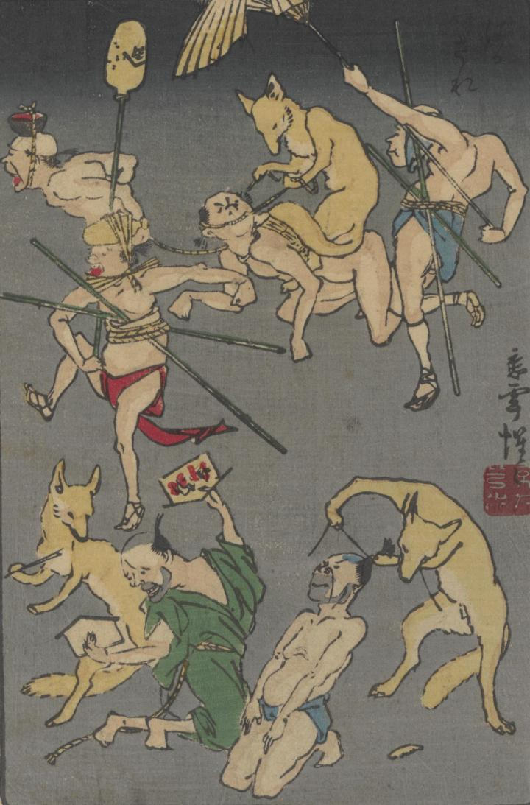

狐が人間の上に馬乗りになったり、人間の髪の毛をしばったり、絵馬を書いたりしている。
著作者：河鍋暁齊／出典：親書誌：U426_nichibunken_0367：狂斎百𠷰；キョウサイ ヒャクズ／日付：2014／資源識別子：U426_nichibunken_0367_0011_0000
Copyright (c)2010- International Research Center for Japanese Studies, Kyoto, Japan. All rights reserved.